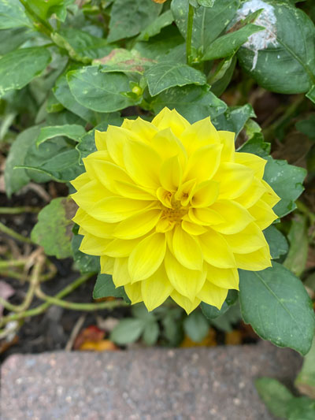

Sujata Ramdam's Portfolio for AENG 110 Class |
|
| Home Print project Photo project Video project | |
|

Orginal: I took this picture out in my garden during day time, using normal camera feature. |
Edited: I have cropped this picture and burred on edges to get rid of white speaces on leafs and to give it a more green color.
|
| Home Print project Photo project Video project | |
| ©2023 Sujata Ramdam> | |